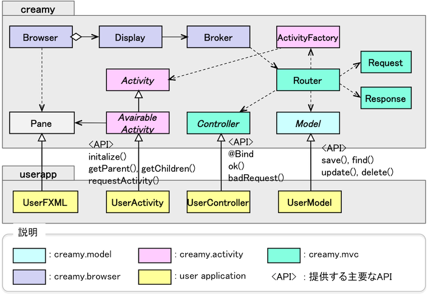

ここでは、
を説明します。
まず、パッケージ構成とJavaFXライブラリ、外部ライブラリとの関連をパッケージ図で見てみましょう。
JavaFXにもCreamyにもscene.control、scene.layoutパッケージがあるのが分かりますね？
これは、CreamyがJavaFXのscene.control、scene.layoutをラップしているということを表しています。
実際にcreamy.scene.control、creamy.scene.layoutに含まれるクラスは、ページ遷移に関連する以下のクラスです。
creamy.scene.control
creamy.scene.layout
つまり、creamy.scene.controlには、Formに関連するInputコントロールと、Hyperlink等のページ遷移に関連するコントロールが配置されているということです。
また、creamy.scene.layoutには、レイアウト形式に応じたFormが配置されているということです。
これらのコントロールは、JavaFX標準のコントロール(Hyperlink,TextField,Button,ChoiceBox.../GridPane,VBox,HBox...)を拡張(継承)して作成されています。
creamy.dbからcom.avaje.ebeanへの使用依存があるのが分かります。
creamy.dbにはModelクラスが配置されており、Ebean O/RマッパのAPIをラップしているのです。
creamy.activityからorg.apache.velocityへの使用依存があるのが分かります。
これは、Activityの生成/FXMテンプレートのレンダリングにおいて、Velocityを使用しているためです。
つぎに、Creamyを構成する主要クラスを見ていきましょう。
まず、ユーザアプリケーションの基底となるクラス群です。
これは分かりやすいですね。Model, View, Controllerごとに基底となるクラスがあります。
Model
View
UserFXMLがPaneを継承した関係になっています。これは、FXMLのルートノードが通常Paneとなるためです
Controller